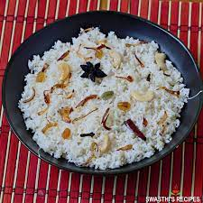

Neychoru

Neychoru is a great dish to be sided with anything like Chicken Chillie,Butter Chicken,Beef Curry/Fry, Paripp (Dal) curry etc.
Ingredients :
- Basmati Rice - 1 cup
- Ghee - 2 tbsp
- Onion -2
- Karukappatta,Cinnamon,Cloves,Cardamom,Cashew,Raisins - handful
- Salt - a pinch
- Hot Water - 2 cup
Procedure :
- Wash rice, soak in water for 15 minutes and drain it well.
- Slice the onion finely.
- Heat 3 table spoons of ghee in a cooking vessel, fry cashew nuts, raisins and finely sliced onion separately till golden brown and keep aside (while frying onions, when it is almost done add 1 tea spoon of sugar so that the fried onions remain crisp throughout).
- Heat ¼ cup of ghee in the vessel, put cinnamon, cloves & cardamom and stir it for few seconds. Proceed to add rice and stir for 5 minutes.
- Add 7 cups of hot water and 1 tea spoon of salt. Cook it covered till done. (Give a stir in between.) Turn off the heat when the water is absorbed by the rice. Keep it closed for another 10 more minutes.Open the lid and garnish with fried onion, cashews and raisins.
- Serve ghee rice hot with gravy type curries, salad, pappad and pickle.